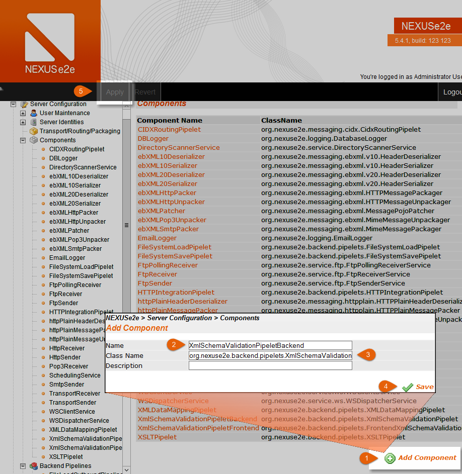
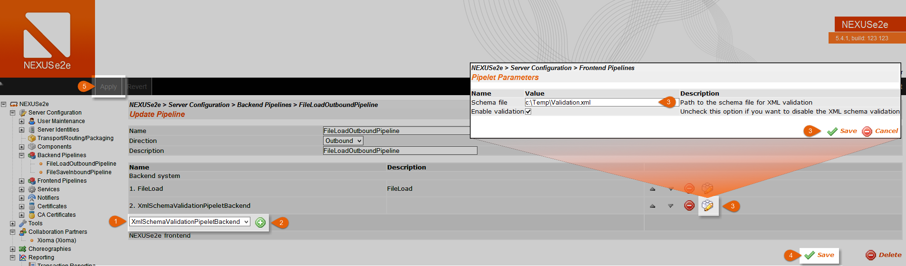
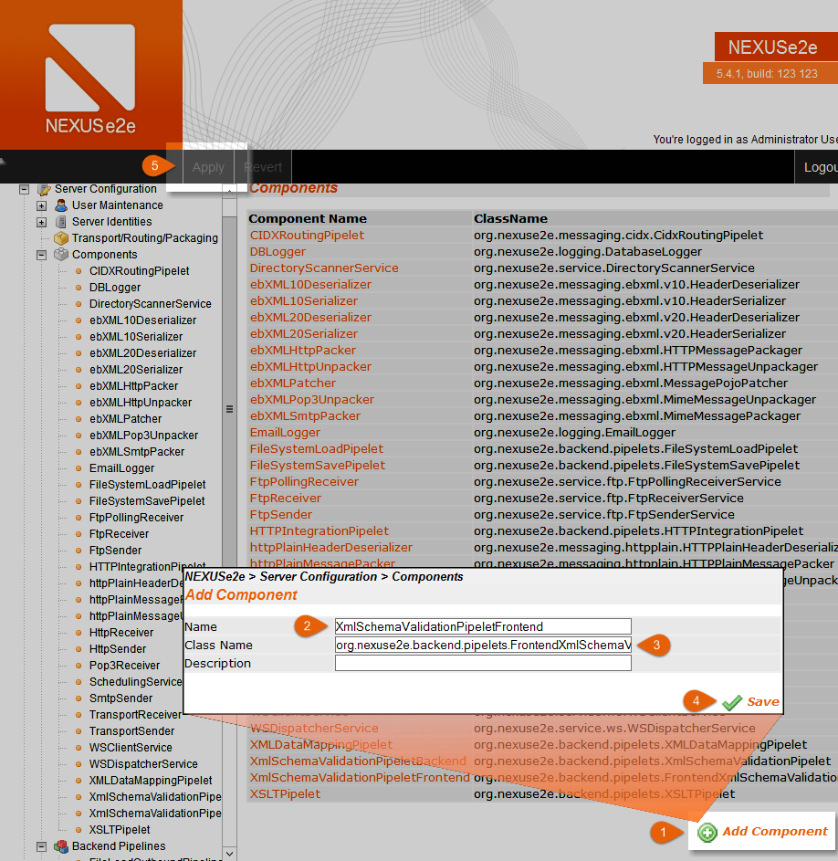
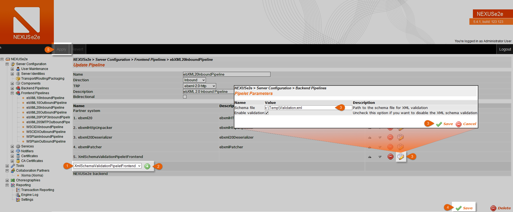

XSD - Schema Validation
XSD validation is possible with NEXUSe2e for outbound and inbound messages. However the components are not enabled by default, you have to create a new pipelet depending on what end you want to validate XML files. For incoming messages it would be suitable to use the frontend pipelet, the backend pipelet for outgoing, thus failed conversation/messages due to invalid XML validations will not occur in your database. If this is an intentional behavior, you need to add the pipelet in the frontend pipeline for outgoing messages vice versa in the backend pipeline for incoming messages. Create the component as descripted and add the pipelet into your pipeline and, also add the relevant XSD file, that is all.
Please make also sure, that the account you are using for the Tomcat Service is allowed to access the folder of your XSD file.
Backend Validation
Create Component
Open your NEXUSe2e Admin-GUI and switch to Components.
- Add a new component.
- Pick a name that exposes the function of this component.
- Add following class name: org.nexuse2e.backend.pipelets.XmlSchemaValidationPipelet
- Click on Save.
- Apply the changes to your Database.
- 
- Zoom
{kind=link}
Edit your Backend Pipeline
To integrate this pipelet into your workflow, you need to add it to a backend pipeline.
Switch to Backend Pipelines in your Admin-GUI.
Open the pipeline that you want to validate outgoing XML files.
- Pick the backend pipelet you created from the dropdown menu.
- Click on the plus icon.
- Set the path to the XSD file and save.
- Click on Save.
- Apply the changes to your Database.
- 
- Zoom
{kind=link}
This is all that needs to be done, your outgoing XML files will now be validated against your XSD file.
Frontend Validation
Create Component
Open your NEXUSe2e Admin-GUI and switch to Components.
- Add a new component.
- Pick a name that exposes the function of this component.
- Add following class name: org.nexuse2e.backend.pipelets.FrontendXmlSchemaValidationPipelet
- Click on Save.
- Apply the changes to your Database.
- 
- Zoom
{kind=link}
Edit your Frontend Pipeline
To integrate this pipelet into your workflow, you need to add it to a frontend pipeline.
Switch to Frontend Pipelines in your Admin-GUI.
Open the pipeline that you want to validate outgoing XML files.
- Pick the frontend pipelet you created from the dropdown menu. *
- Click on the plus icon.
- Set the path to the XSD file and save.
- Click on Save.
- Apply the changes to your Database.
* It should be on the lowest position, the message should be unpackend and deserialized first.
- 
- Zoom
{kind=link}
This is all that needs to be done, your incoming XML files will now be validated against your XSD file.
Log Messages
Messages that do not surpass the validation process will not occur in your NEXUSe2e Transaction Reporting as conversation but will generate a log entry which will look like this:
[ERROR] 2015-08-14 17:23:26,487 org.nexuse2e.service.http.HttpReceiverService.handleRequest(HttpReceiverService.java:150) - unknown/unknown (unknown->unknown): processing failed (error-ref:9e077aac-a45a-4abd-8079-2d5b5d90a45e)
The stacktrace, in this case it is shortened, you will find which part is not valid:
at org.apache.catalina.core.ApplicationFilterChain.internalDoFilter(ApplicationFilterChain.java:303)
at org.apache.catalina.core.ApplicationFilterChain.doFilter(ApplicationFilterChain.java:208)
at org.apache.tomcat.websocket.server.WsFilter.doFilter(WsFilter.java:52)
at org.apache.catalina.core.ApplicationFilterChain.internalDoFilter(ApplicationFilterChain.java:241)
at org.apache.catalina.core.ApplicationFilterChain.doFilter(ApplicationFilterChain.java:208)
at org.apache.catalina.core.StandardWrapperValve.invoke(StandardWrapperValve.java:220)
at org.apache.catalina.core.StandardContextValve.invoke(StandardContextValve.java:122)
at org.apache.catalina.authenticator.AuthenticatorBase.invoke(AuthenticatorBase.java:505)
at org.apache.catalina.core.StandardHostValve.invoke(StandardHostValve.java:170)
at org.apache.catalina.valves.ErrorReportValve.invoke(ErrorReportValve.java:103)
at org.apache.catalina.valves.AccessLogValve.invoke(AccessLogValve.java:957)
at org.apache.catalina.core.StandardEngineValve.invoke(StandardEngineValve.java:116)
at org.apache.catalina.connector.CoyoteAdapter.service(CoyoteAdapter.java:423)
at org.apache.coyote.http11.AbstractHttp11Processor.process(AbstractHttp11Processor.java:1079)
at org.apache.coyote.AbstractProtocol$AbstractConnectionHandler.process(AbstractProtocol.java:620)
at org.apache.tomcat.util.net.AprEndpoint$SocketProcessor.doRun(AprEndpoint.java:2516)
at org.apache.tomcat.util.net.AprEndpoint$SocketProcessor.run(AprEndpoint.java:2505)
at java.util.concurrent.ThreadPoolExecutor.runWorker(ThreadPoolExecutor.java:1142)
at java.util.concurrent.ThreadPoolExecutor$Worker.run(ThreadPoolExecutor.java:617)
at org.apache.tomcat.util.threads.TaskThread$WrappingRunnable.run(TaskThread.java:61)
at java.lang.Thread.run(Thread.java:745)
Caused by: org.xml.sax.SAXParseException; cvc-elt.1: Cannot find the declaration of element 'Document'.
at org.apache.xerces.util.ErrorHandlerWrapper.createSAXParseException(Unknown Source)
at org.apache.xerces.util.ErrorHandlerWrapper.error(Unknown Source)
at org.apache.xerces.impl.XMLErrorReporter.reportError(Unknown Source)
at org.apache.xerces.impl.XMLErrorReporter.reportError(Unknown Source)
at org.apache.xerces.impl.xs.XMLSchemaValidator.handleStartElement(Unknown Source)
at org.apache.xerces.impl.xs.XMLSchemaValidator.startElement(Unknown Source)
at org.apache.xerces.jaxp.validation.DOMValidatorHelper.beginNode(Unknown Source)
at org.apache.xerces.jaxp.validation.DOMValidatorHelper.validate(Unknown Source)
at org.apache.xerces.jaxp.validation.DOMValidatorHelper.validate(Unknown Source)
at org.apache.xerces.jaxp.validation.ValidatorImpl.validate(Unknown Source)
at javax.xml.validation.Validator.validate(Validator.java:124)
at org.nexuse2e.backend.pipelets.XmlSchemaValidationPipelet.processMessage(XmlSchemaValidationPipelet.java:143)
... 33 more
Lookout for the part:
Caused by: org.xml.sax.SAXParseException; cvc-elt.1: Cannot find the declaration of element 'Document'.
It says that the element "Document" is not valid according to the XSD.